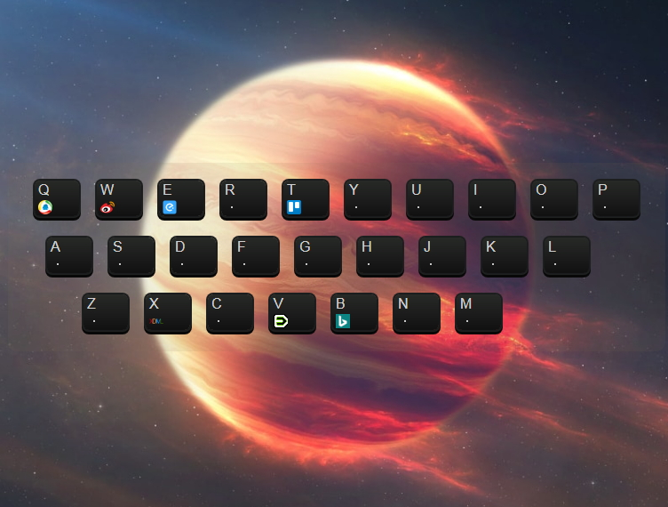
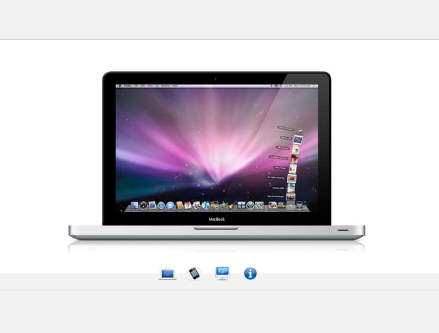

RS
card
关于
技能
作品
作品1
作品2
作品3
博客
博客1
博客2
博客3
日历
联系方式
其它
Hello
唐小桃
前端开发工程师
年龄
22
所在城市
广州
邮箱
13790020331@163.com
手机
13790020331
下载 PDF 简历
唐小桃，初级前端工程师
技能：前端开发
技能
HTML 5 & CSS 3
JavaScript
jQuery
Vue
React
HTTP
作品集
 